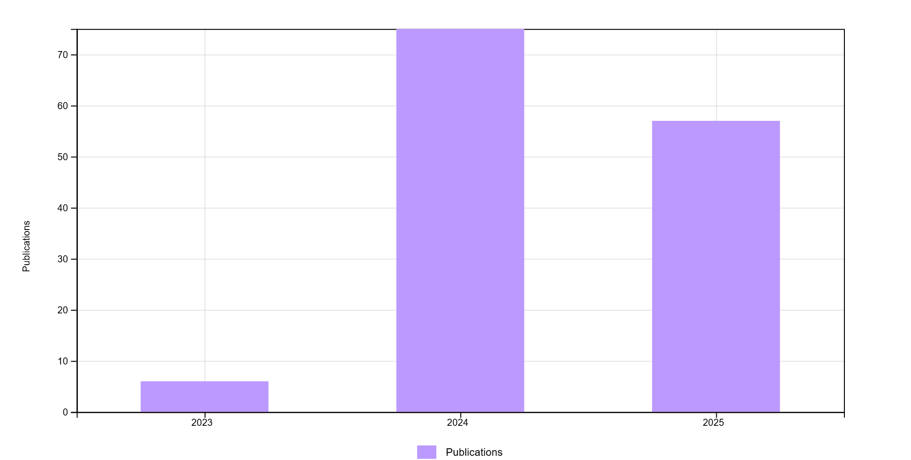
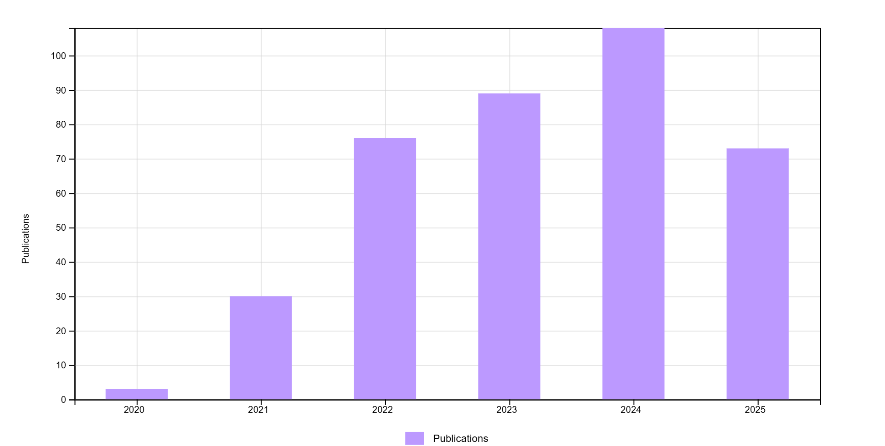
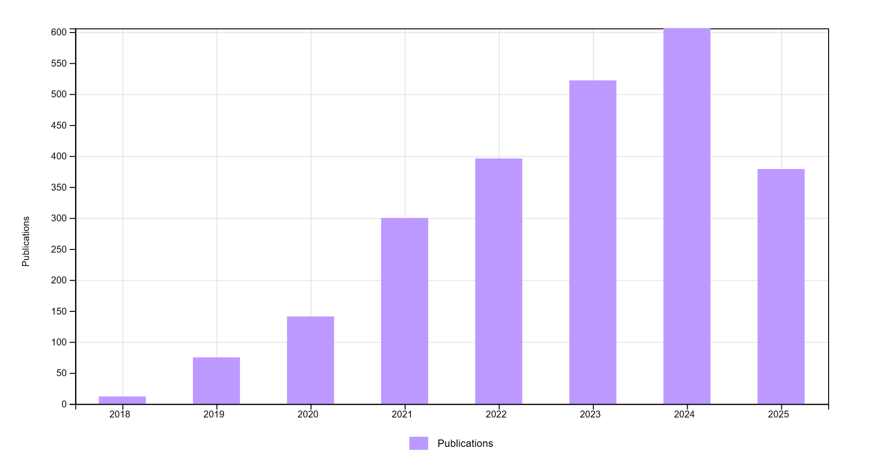
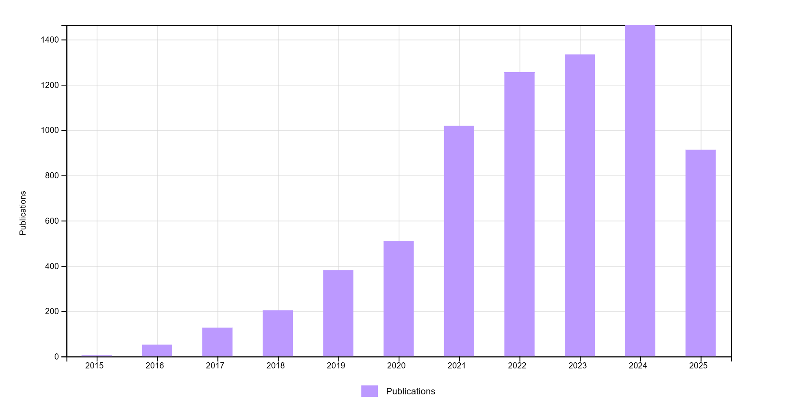

Selected statistical papers
2025
-
Wenwu Wang, Xiujin Peng and Tiejun Tong (2025)
Robust and efficient mediation analysis via Huber loss
Psychometrika, in press.
-
Zhijian Li, Tiejun Tong and Yuedong Wang (2025)
A difference-based method for testing no effect in nonparametric regression
Computational Statistics, in press.
2024
-
Lu Qin, Shishun Zhao, Wenlai Guo, Tiejun Tong and Ke Yang (2024)
A comparison of two models for detecting inconsistency in network meta-analysis
Research Synthesis Methods, 15: 851-871.
-
Jiajin Wei, Ping He and Tiejun Tong (2024)
Estimating the reciprocal of a binomial proportion
International Statistical Review, 92: 1-16.
-
Yuejin Zhou, Wenwu Wang, Tao Hu, Tiejun Tong and Zhonghua Liu (2024)
Causal mediation analysis for an ordinal outcome with multiple mediators
Structural Equation Modeling: A Multidisciplinary Journal, 31: 205-216.
-
Zongliang Hu, Tiejun Tong and Marc. G. Genton (2024)
A pairwise Hotelling method for testing high-dimensional mean vectors
Statistica Sinica, 34: 229-256.
-
Wenchao Xu, Hongmei Lin, Tiejun Tong and Riquan Zhang (2024)
A new method for estimating Sharpe ratio function via local maximum likelihood
Journal of Applied Statistics, 51: 34-52.
2023
-
Jiandong Shi, Dehui Luo, Xiang Wan, Yue Liu, Jiming Liu, Zhaoxiang Bian and Tiejun Tong (2023)
Detecting the skewness of data from the five-number summary and its application in meta-analysis
Statistical Methods in Medical Research, 32: 1338–1360.
[Online Calculator]
 |
-- This paper has been recognized as a Highly Cited Paper in ISI Web of Science, with a total of 80 citations (and 100+ citations in Google Scholar) as of December 2024.
-
Zongliang Hu, Yiping Yang, Gaorong Li and Tiejun Tong (2023)
Regularized t distribution: definition, properties and applications
Scandinavian Journal of Statistics, 50: 1884-1900.
-
Wenwu Wang, Ping Yu, Yuejin Zhou, Tiejun Tong and Zhonghua Liu (2023)
Equivalence of two least-squares estimators for indirect effects
Current Psychology, 42: 7364–7375.
2022
-
Sanying Feng, Menghan Zhang and Tiejun Tong (2022)
Variable selection for functional linear models with strong heredity constraint
Annals of the Institute of Statistical Mathematics, 74: 321–339.
-
Yanyan Ouyang, Jiamin Liu, Tiejun Tong and Wangli Xu (2022)
A rank-based high-dimensional test for equality of mean vectors
Computational Statistics and Data Analysis, 173: 107495.
-
Hongmei Lin, Tiejun Tong, Yuedong Wang, Wenchao Xu and Riquan Zhang (2022)
Direct local linear estimation for Sharpe ratio function
Canadian Journal of Statistics, 50: 36-58.
-
Wenwu Wang, Jun Lu, Tiejun Tong and Zhonghua Liu (2022)
Debiased learning and forecasting of first derivative
Knowledge-Based Systems, 236: 107781.
-
Yan Zhou, Minjiao Peng, Bin Yang, Tiejun Tong, Baoxue Zhang and Niansheng Tang (2022)
scDLC: a deep learning framework to classify large sample single-cell RNA-seq data
BMC Genomics, 23: 504.
2021
-
Jiajin Wei, Enxuan Lin, Jiandong Shi, Ke Yang, Zongliang Hu, Xian-Tao Zeng and Tiejun Tong (2021)
Meta-analysis with zero-event studies: a comparative study with application to COVID-19 data
Military Medical Research, 8: 41.
-
Wenhao Cao, Lianne Siegel, Jincheng Zhou, Motao Zhu, Tiejun Tong, Yong Chen and Haitao Chu (2021)
Estimating the reference interval from a fixed effects meta-analysis
Research Synthesis Methods, 12: 630-640.
-
Sanying Feng, Gaorong Li, Heng Peng and Tiejun Tong (2021)
Varying coefficient panel data model with interactive fixed effects
Statistica Sinica, 31: 935-957.
-
Zongliang Hu, Zhishui Hu, Kai Dong, Tiejun Tong and Yuedong Wang (2021)
A shrinkage approach to joint estimation of multiple covariance matrices
Metrika, 84: 339-374.
-
Zongliang Hu, Yan Zhou and Tiejun Tong (2021)
Meta-analyzing multiple omics data with robust variable selection
Frontiers in Genetics, 12: 656826.
-
Wenwu Wang, Wei Shen and Tiejun Tong (2021)
Robust estimation of nonparametric function via addition sequence
Journal of Statistical Planning and Inference, 211: 423-438.
2020
-
Jiandong Shi, Dehui Luo, Hong Weng, Xian-Tao Zeng, Lu Lin, Haitao Chu and Tiejun Tong (2020)
Optimally estimating the sample standard deviation from the five-number summary
Research Synthesis Methods, 11: 641-654.
[Online Calculator]
-- 基于中位数的荟萃分析新发展 【科学观察, 16(6): 82-84, 2021, 中国数学研究热点论文特约稿】
 |
-- This paper has been recognized as a Highly Cited Paper in ISI Web of Science, with a total of 300 citations (and 350+ citations in Google Scholar) as of December 2024. This paper has also been recognized as a Top Cited Paper in Research Synthesis Methods among all the papers published between 1 January 2020 and 31 December 2021.
-
Hong Zhang, Tiejun Tong, John Landers and Zheyang Wu (2020)
TFisher: A powerful truncation and weighting procedure for combining p-values
Annals of Applied Statistics, 14: 178-201.
-
Fengyang He, Huixia Judy Wang and Tiejun Tong (2020)
Extremal linear quantile regression with Weibull-type tails
Statistica Sinica, 30: 1357-1377.
-
Hailun Wang, Pak Sham, Tiejun Tong and Herbert Pang (2020)
Pathway-based single-cell RNA-Seq classification and construction of co-occurrence network using random forests
IEEE Journal of Biomedical and Health Informatics, 24: 1814-1822.
-
Shuwei Li, Tao Hu, Tiejun Tong and Jianguo Sun (2020)
Semi-parametric regression analysis of multivariate doubly-censored data
Statistical Modelling, 20: 502-526.
-
Ke Yang, Hiu-Yee Kwan, Zhiling Yu and Tiejun Tong (2020)
Model selection between the fixed-effects model and the random-effects model in meta-analysis
Statistics and Its Interface (Special Issue on Meta-Analysis), 13: 501-510.
-
Jiandong Shi, Tiejun Tong, Yuedong Wang and Marc G. Genton (2020)
Estimating the mean and variance from the five-number summary of a log-normal distribution
Statistics and Its Interface (Special Issue on Meta-Analysis), 13: 519-531.
2019
-
Wenwu Wang, Ping Yu, Lu Lin and Tiejun Tong (2019)
Robust estimation of derivatives using locally weighted least absolute deviation regression
Journal of Machine Learning Research, 20(60): 1−49.
-
Zongliang Hu, Tiejun Tong and Marc G. Genton (2019)
Diagonal likelihood ratio test for equality of mean vectors in high-dimensional data
Biometrics, 75: 256-267.
-
Yiping Yang, Tiejun Tong and Gaorong Li (2019)
SIMEX estimation for single-index model with covariate measurement error
AStA Advances in Statistical Analysis, 103: 137-161.
-
Yan Zhou, Jiadi Zhu, Tiejun Tong, Junhui Wang, Bingqing Lin and Jun Zhang (2019)
A statistical normalization method and differential expression analysis for RNA-seq data between different species
BMC Bioinformatics, 20: 163.
2018
-
Dehui Luo, Xiang Wan, Jiming Liu and Tiejun Tong (2018)
Optimally estimating the sample mean from the sample size, median, mid-range and/or mid-quartile range
Statistical Methods in Medical Research, 27: 1785-1805.
[Online Calculator]
-- 中国热点论文榜 【科学观察, 18(6): 1-12, 2023】
-- 中国热点论文榜 【科学观察, 17(6): 1-12, 2022】
-- 童铁军团队"样本均值优化算法"一文引用内容分析 【科学观察, 16(6): 90-98, 2021】
-- 如何实现从样本量、中位数、极值或四分位数到均数与标准差的转换 【中国循证医学杂志, 17: 1350-1356, 2017】
 |
-- This paper establishes a new "rule of thumb" between the sample mean, median and mid-range.
The paper has been recognized as a Highly Cited Paper in ISI Web of Science, with a total of 2000 citations (and 2400+ citations in Google Scholar) as of December 2024.
-
Yan Zhou, Xiang Wan, Baoxue Zhang and Tiejun Tong (2018)
Classifying next-generation sequencing data using a zero-inflated Poisson model
Bioinformatics, 34: 1329-1335. [R package for ZIPLDA]
-
Yuejin Zhou, Yebin Cheng, Wenlin Dai and Tiejun Tong (2018)
Optimal difference-based estimation for partially linear models
Computational Statistics, 33: 863-885.
2017
-
Wenlin Dai, Tiejun Tong and Lixing Zhu (2017)
On the choice of difference sequence in a unified framework for variance estimation in nonparametric regression
Statistical Science, 32: 455-468.
-
Zongliang Hu, Kai Dong, Wenlin Dai and Tiejun Tong (2017)
A comparison of methods for estimating the determinant of high-dimensional covariance matrix
International Journal of Biostatistics, 13: 20170013.
-
Yan Zhou, Baoxue Zhang, Gaorong Li, Tiejun Tong and Xiang Wan (2017)
GD-RDA: A new regularized discriminant analysis for high dimensional data
Journal of Computational Biology, 24: 1099-1111.
-
Yujie Li, Gaorong Li, Heng Lian and Tiejun Tong (2017)
Profile forward regression screening for ultra-high dimensional semiparametric varying coefficient partially linear models
Journal of Multivariate Analysis, 155: 133-150.
2016
-
Wenlin Dai, Tiejun Tong and Marc G. Genton (2016)
Optimal estimation of derivatives in nonparametric regression
Journal of Machine Learning Research, 17(164): 1-25.
-
Kai Dong, Hongyu Zhao, Tiejun Tong and Xiang Wan (2016)
NBLDA: Negative binomial linear discriminant analysis for RNA-Seq data
BMC Bioinformatics, 17: 369.
-
Jiacheng Yuan, Herbert Pang, Tiejun Tong, Dong Xia, Wenzhao Guo and Peter Mesenbrink (2016)
Seamless phase IIa/IIb and enhanced dose finding adaptive design
Journal of Biopharmaceutical Statistics, 26: 912-923.
-
Kai Dong, Herbert Pang, Tiejun Tong and Marc G. Genton (2016)
Shrinkage-based diagonal Hotelling tests for high-dimensional small sample size data
Journal of Multivariate Analysis, 143: 127-142.
-
Fengyang He, Yebin Cheng and Tiejun Tong (2016)
Estimation of high conditional quantiles using the Hill estimator of the tail index
Journal of Statistical Planning and Inference, 176: 64-77.
2015
-
Yebin Cheng, Dexiang Gao and Tiejun Tong (2015)
Bias and variance reduction in estimating the proportion of true null hypotheses
Biostatistics, 16: 189-204. [R codes]
-
Yuejin Zhou, Yebin Cheng, Lie Wang and Tiejun Tong (2015)
Optimal difference-based variance estimation in heteroscedastic nonparametric regression
Statistica Sinica, 25: 1377-1397.
-
Cheng Wang, Guangming Pan, Tiejun Tong and Lixing Zhu (2015)
Shrinkage estimation of large dimensional precision matrix using random matrix theory
Statistica Sinica, 25: 993-1008.
-
Yiping Yang, Gaorong Li and Tiejun Tong (2015)
Corrected empirical likelihood for a class of generalized linear measurement error models
Science China Mathematics, 58: 1523-1536.
-
Wenlin Dai, Yanyuan Ma, Tiejun Tong and Lixing Zhu (2015)
Difference-based variance estimation in nonparametric regression with repeated measurement data
Journal of Statistical Planning and Inference, 163: 1-20.
2014
-
Xiang Wan, Wenqian Wang, Jiming Liu and Tiejun Tong (2014)
Estimating the sample mean and standard deviation from the sample size, median, range and/or interquartile range
BMC Medical Research Methodology, 14: 135.
[Online Calculator]
 |
-- This paper establishes an improved "rule of thumb" between the sample range and the sample standard deviation.
The paper has been recognized as a Highly Cited Paper in ISI Web of Science, with a total of 6400 citations (and 8100+ citations in Google Scholar) as of January 2025.
-
Gaorong Li, Heng Peng, Kai Dong and Tiejun Tong (2014)
Simultaneous confidence bands and hypothesis testing for single-index models
Statistica Sinica, 24: 937-955.
-
Cheng Wang, Tiejun Tong, Longbing Cao and Baiqi Miao (2014)
Nonparametric shrinkage mean estimation for quadratic loss functions with unknown covariance matrices
Journal of Multivariate Analysis, 125: 222-232.
-
Tiejun Tong, Cheng Wang and Yuedong Wang (2014)
Estimation of variances and covariances for high-dimensional data: a selective review
Wiley Interdisciplinary Reviews: Computational Statistics, 6: 255-264.
2013
-
Tiejun Tong, Yanyuan Ma and Yuedong Wang (2013)
Optimal variance estimation without estimating the mean function
Bernoulli, 19: 1839-1854.
-
Herbert Pang, Tiejun Tong and Michael K. Ng (2013)
Block-diagonal discriminant analysis and its bias-corrected rules
Statistical Applications in Genetics and Molecular Biology, 12: 347-359.
-
Gaorong Li, Heng Peng and Tiejun Tong (2013)
Simultaneous confidence bands for nonparametric fixed effects panel data models
Economics Letters, 119: 229-232.
2012
-
Tiejun Tong, Liang Chen and Hongyu Zhao (2012)
Improved mean estimation and its application to diagonal discriminant analysis
Bioinformatics, 28: 531-537.
-
Tiejun Tong, Homin Jang and Yuedong Wang (2012)
James-Stein type estimators of variances
Journal of Multivariate Analysis, 107: 232-243.
-
Herbert Pang, Stephen George, Ken Hui and Tiejun Tong (2012)
Gene selection using iterative feature elimination random survival forests
IEEE/ACM Transactions on Computational Biology and Bioinformatics, 9, 1422-1431.
2011
-
Liqian Peng and Tiejun Tong (2011)
A note on two-sample t test with one variance unknown
Statistical Methodology, 8: 528-534.
2010
-
Song Huang, Tiejun Tong and Hongyu Zhao (2010)
Bias-corrected diagonal discriminant rules for high-dimensional classification
Biometrics, 66: 1096-1106.
-
Nairanjana Dasgupta, Eleanne Solorzano and Tiejun Tong (2010)
Comparing multiple treatments to both positive and negative controls
Journal of Statistical Planning and Inference, 140: 180-188.
2009
-
Herbert Pang, Tiejun Tong and Hongyu Zhao (2009)
Shrinkage-based diagonal discriminant analysis and its applications in high-dimensional data
Biometrics, 65: 1021-1029.
2008
-
Tiejun Tong and Hongyu Zhao (2008)
Practical guidelines for assessing power and false discovery rate for a fixed sample size in microarray experiments
Statistics in Medicine, 27: 1960-1972. [R codes]
-
Liang Chen, Tiejun Tong and Hongyu Zhao (2008)
Considering dependence among genes and markers for false discovery control in eQTL mapping
Bioinformatics, 24: 2015-2022.
2007
-
Tiejun Tong and Yuedong Wang (2007)
Optimal shrinkage estimation of variances with applications to microarray data analysis
Journal of the American Statistical Association, 102: 113-122.
-
Anna Liu, Tiejun Tong and Yuedong Wang (2007)
Smoothing spline estimation of variance function
Journal of Computational and Graphical Statistics, 16: 312-329.
2005
-
Tiejun Tong and Yuedong Wang (2005)
Estimating residual variance in nonparametric regression using least squares
Biometrika, 92: 821-830.
2004
-
Chun Su and Tiejun Tong (2004)
Almost sure convergence of the general Jamison weighted B-valued random variables
Acta Mathematica Sinica, English Series, 20: 181-192.